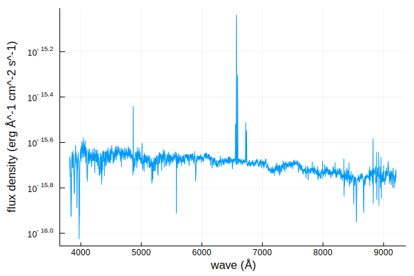

Spectra.jl
Utilities for interfacing with astronomical spectra and synthetic spectra libraries.
Installation
From the REPL, press ] to enter Pkg mode
(v 1.2) pkg> add https://github.com/JuliaAstro/Spectra.jl
julia> using SpectraQuick Start
Here is a quick demo of some of our features
julia> using Spectra, FITSIO, Unitful, UnitfulAstro, Plots
julia> download("https://dr14.sdss.org/optical/spectrum/view/data/format=fits/spec=lite?plateid=1323&mjd=52797&fiberid=12", "sdss.fits");
julia> f = FITS("sdss.fits")
File: sdss.fits
Mode: "r" (read-only)
HDUs: Num Name Type
1 Image
2 COADD Table
3 SPECOBJ Table
4 SPZLINE Table
julia> wave = 10 .^ read(f[2], "loglam") * u"angstrom";
julia> flux = read(f[2], "flux") .* 1e-18 * u"erg/s/cm^2/angstrom";
julia> spec = spectrum(wave, flux)
UnitfulSpectrum (3827,)
λ (Å) f (erg Å^-1 cm^-2 s^-1)
julia> plot(spec);

Citation
If you found this software or any derivative work useful in your academic work, I ask that you please cite the code.
TODOContributing
Please see Contributing for information on contributing and extending Spectra.jl.